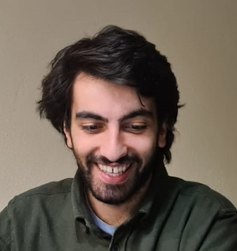

Bouas! Bem-vindo ao meu canto da internet.
Faço jogos, ensino miúdos a fazê-los e traduzo jogos para português desde 2009.
Não por um plano de carreira. Porque me dá na cabeça. Este site é onde guardo o que faço, o que estou a fazer e algumas coisas que só fazem sentido se souberes a história.
- Game dev
- Formador
- Tradutor
- Curioso profissional
Agora: Anamara 3D e aulas no TUMO.

Em destaque
Quatro coisas que dizem mais sobre mim do que um CV.
Também fiz
Aqui mostra-se a amplitude: hardware, museus, acessibilidade, investigação.
A gaveta
Projectos de faculdade, primeiros jogos e experiências. Estão aqui porque fazem parte da história — não porque são o meu melhor trabalho.
Sobre mim
Sou o João. Comecei a mexer em computadores pequeno — Windows XP, depois 7, hoje Linux — e nunca perdi o gosto de mandar no meu próprio PC. Gosto de cores, de vida e de coisas que se exploram. O contrário de um site flat.
A minha área de estudo é game development, mas o que faço é mais largo do que isso: programo, modelo, texturizo, escrevo, ensino, traduzo e faço sites. Aprendo o que a coisa precisa até a coisa existir. Generalista por escolha, não por dispersão.
O fio que atravessa quase tudo é a acessibilidade: jogos para alunos surdos, para pessoas autistas, para deficiência motora. Não é um nicho que apanhei por acaso — é o que me faz continuar.
Fora do trabalho: jogos Flash antigos, Trackmania, coisas esquisitas da internet de 2000, e projectos que começam com “e se eu fizesse…”.
Contacto
Se te identificares com isto, melhor ainda. É assim que quero encontrar trabalho.